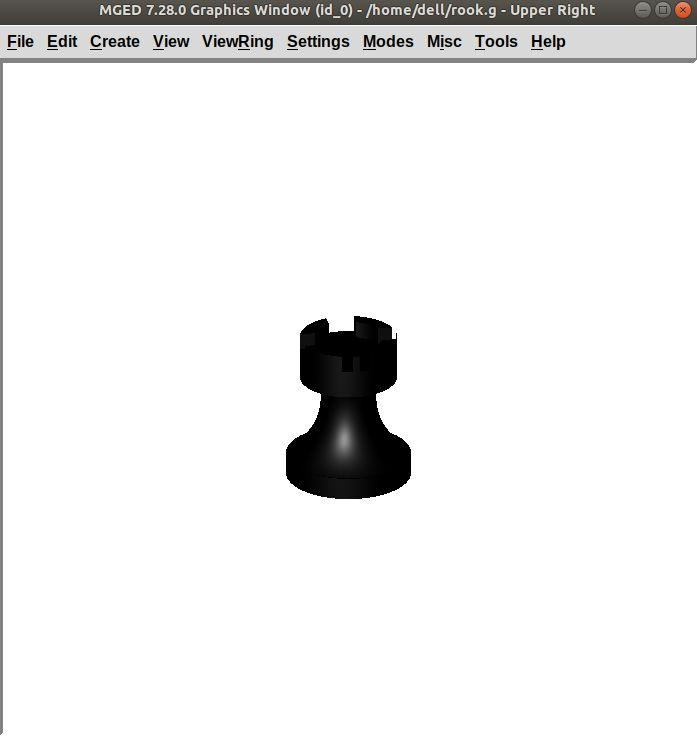
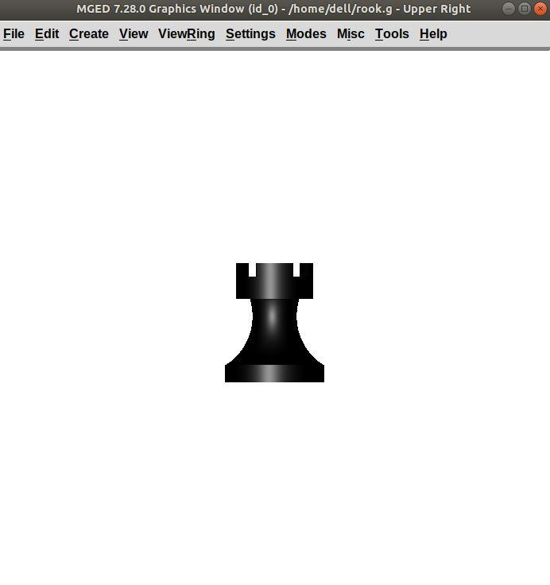

Modeling Rook
Before you start modeling this piece, create a new database named
rook.g. Create this new database as we did in the previous
case.
Type in the Command Window:
opendb rook.g ENTER
Now, you are ready to model the rook. Since you are already familiar
with the in command, therefore you will be using the shorthand
method of this command for making shapes.
1. Making the base and body
Making the base is the same as we did in pawn. Type the following in the MGED command window:
in base.rcc rcc 0 0 0 0 0 0.8 2.25 ENTER
This command will make a cylinder at vertex 0 0 0 with height 0 0
0.8 and radius 2.25.
As we did in pawn, we will create the body using two shapes: rcc and trc. To create the body, type:
in body.trc trc 0 0 0.8 0 0 3 2.25 1.1 ENTER
This command creates a trc at vertex 0 0 0.8 with height 0 0 1.5,
radius of the base 2.25 and radius of top 1.1. Now, to create the
curve, type:
in curve.tor tor 0 0 3 0 0 1 3.6 2.6 ENTER
In pawn, we had the vertex at a distance greater than the height of
trc because we wanted the curve to start right when the body starts
but in this case we want to have a straight portion before the curve
part. So, we have the vertex at 0 0 3. The normal vector is 0 0 1
to make our shape perpendicular to z-axis. Radius 1 is 3.6 and
Radius 2 is 2.6.
You will get something like this (after zooming out by clicking the left mouse button, to zoom in click the right mouse button):
In Front view:
2. Constructing the hollow cylinder for the head
Now comes the tricky part; we need to model the head. To understand it
completely, type Z to clear the Graphic Window temporarily.
Make sure your Command Window is active while you do so.
To make a cylinder for neck:
in neck.rcc rcc 0 0 3.8 0 0 1 1.75 ENTER
The value of vertex 0 0 3.8 came after adding the height of the
base and the body. I hope you are familiar with how we use the value
of the vertex.
For the head, we have to make a hollow cylinder first, which comes after subtracting a cylinder from another cylinder with a comparatively larger radius. Therefore, the vertex and height of both the inner and outer cylinders should be the same. The radius of the inner cylinder depends on the thickness of the required hollow cylinder.
To construct the outer cylinder type:
in outer.rcc rcc 0 0 4.8 0 0 0.6 1.75 ENTER
To make the inner cylinder with the same vertex and height, type:
in inner.rcc rcc 0 0 4.8 0 0 0.6 1.25 ENTER
Your graphics window will look like:
3. The first cuboid for the rook head
Generally, when you see a rook piece its head seems as in a hollow cylinder is cut in pieces. To replicate that, we will make two cuboids with length equal to or greater than the radius of the outer cylinder, and height equal to the height of either one of the cylinders (both inner and outer cylinders have the same height). Then you will subtract these cuboids from the hollow cylinder. Now you will make two cuboids that can be placed perpendicular to each other like an X mark (a cross). For that, we will make rpp (Rectangular Parallelopiped).
To make the first one, type:
in cross1.rpp rpp ENTER
Then MGED will ask for XMIN, XMAX, YMIN, YMAX, ZMIN, ZMAX
values. Type:
-1.75 1.75 -0.5 0.5 4.8 5.4 ENTER
To check the coordinate system, press m making sure the Graphics
window is active. You won’t see the coordinate lines because you are a
little above the origin. So, left-click on the graphics window to
zoom out. You will see that the Z-axis is along the diameter.
Therefore the XMIN should be -1.75 (radius of the outer cylinder)
and XMAX should be 1.75. The breadth is along the
Y-axis. Therefore, -0.5 for YMIN and 0.5 for YMAX. The
height is along the Z-axis. Since the cuboid must start from the
base of the outer cylinder, therefore ZMIN is 4.8 and ZMAX is
5.4 i.e., ZMIN plus height of outer cylinder (0.6).
4. Constructing a cuboid perpendicular to the first
Since you need another cuboid perpendicular to the first one, we use the clone command as follows:
clone -r 0 0 90 cross1.rpp ENTER
You are not yet familiar with the clone command which will be explained in detail in the Modeling Chessboard section.
Now, MGED will respond with
cross101.rpp {cross101.rpp)
This means we have both shapes for the cross. To view the other shape, type:
draw cross101.rpp ENTER
You can look at the head from different views by changing it from the
View Menu. Don’t get discouraged if you only see the head, the other
shapes are still right there but since we cleared the Graphics Window
using Z they are not visible. To get the list of all the shapes
in your database, type in the command window:
ls ENTER
You will get a list of all your shapes. To view all your shapes on the Graphics Window, use the draw command. Draw all the remaining shapes as follows:
draw base.rcc body.trc curve.tor ENTER
Make sure to add spaces between the names. This command tells MGED to draw the three specified shapes. In the az35, el25 view, your design will look like:
Before you raytrace, make the region of the rook:
r rook.r u base.rcc u body.trc - curve.tor u neck.rcc u
outer.rcc - inner.rcc - cross1.rpp - cross101.rpp ENTER
Here we have subtracted curve.tor from body.trc to make the
curve. Subtracted inner.rcc from outer.rcc to make a hollow
cylinder and subtracted both cuboids cross1.rpp and cross101.rpp
from the outer hollow cylinder to give the finishing look. This
command makes a region named rook.r.
5. Assigning material properties and raytracing
We will assign material properties as we did in the case of pawn. We will use the shorthand method of the mater command. Type:
mater rook.r plastic 0 0 0 0 ENTER
Don’t forget to clear the graphics window and redraw the design using Blast command as follows:
B rook.r ENTER
Now, raytrace your design from the File menu. Change the background color to white and select the Overlay option from Framebuffer option in the Raytrace Menu Bar. For details check the instructions in the previous model of the pawn. This is what we get after raytracing:

Figure 1. az35, el25 view
|

Figure 2. Left view
|